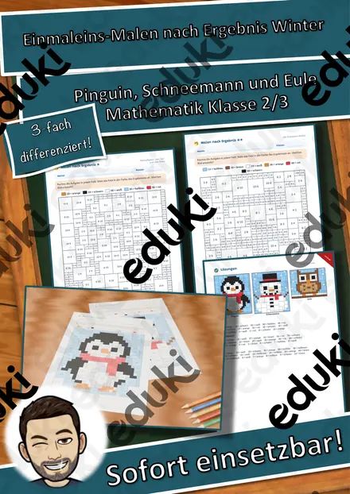
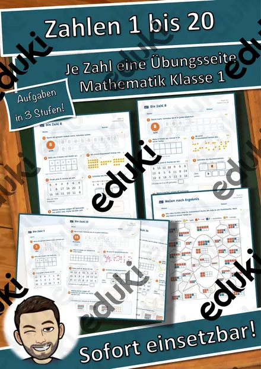
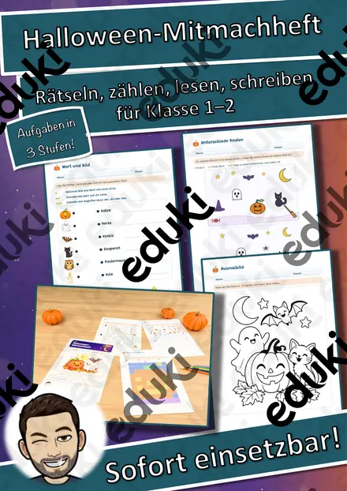
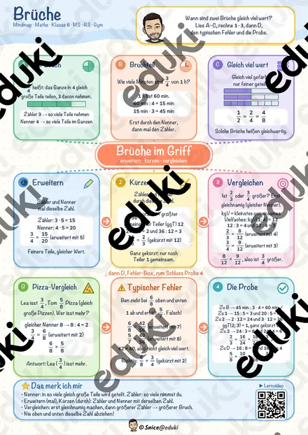

Homeschooling Bilder-Einmaleins (kleines Einmaleins) (auch Homeschooling)
Mit diesem Einmaleins-Material erhalten Sie das Bilder-Einmaleins-Set. Auch perfekt geignet zum Homeschooling während der Schulschließungen auf Grund des Coronavirus. Sie können die 9 Einmaleins-Bildkarten entweder an der Tafel aushängen, oder den Schuler in einer Lerntheke zur Verfügung stellen. Die Schüler überlegen sich selbst Aufgaben zu den Bildkarten und Lösen diese. Die Schüler können zur Differenzierung ein passendes Arbeitsblatt dazu bekommen oder ihr eigenes Heft bzw. ihren eigenen Block nutzen.
FachMathematik
Klasse–
SchulformGrundschule
MaterialartUnterrichtsreihen, Stundenentwürfe, Merkblätter, Stationenlernen
Ähnliche Materialien

Auf einen Blick! Mengen bis 10 blitzschnell erkennen – Miniheft Mathematik Klasse 1

Halloween-Rätselpuzzle Einmaleins – Gespenst, Fledermaus, Katze und Kürbis, 3-fach differenziert mit Selbstkontrolle (Klasse 2/3)

Einmaleins-Malen nach Ergebnis Winter – Pinguin, Schneemann, Eule, 3-fach differenziert mit Selbstkontrolle (Klasse 2/3)

Zahlen 1 bis 20 – je Zahl eine Übungsseite: schreiben, Zehnerfeld, zählen, suchen, Nachbarzahlen, schneiden und kleben (Klasse 1, 3-fach differenziert)

Mein Halloween-Mitmachheft – Rätseln, zählen, lesen, schreiben, 3-fach differenziert (Klasse 1–2)

Brüche Mindmap + 4 Arbeitsblätter mit Lösungen + Lernvideo (QR) – erweitern, kürzen, vergleichen

Teilbarkeit, ggT & kgV Mindmap + 4 Arbeitsblätter mit Lösungen + Lernvideo (QR) – Teiler, Primzahlen